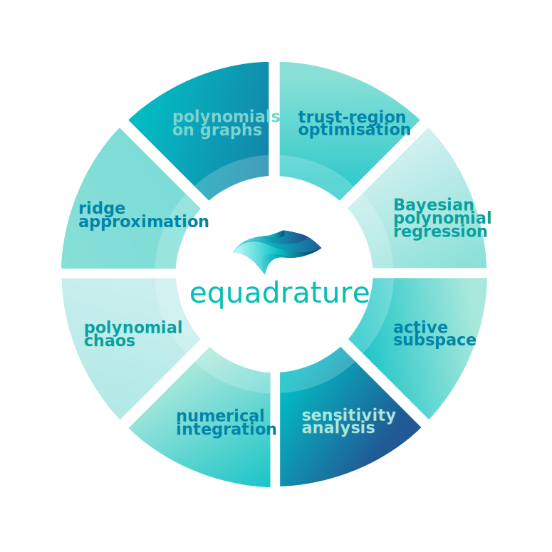
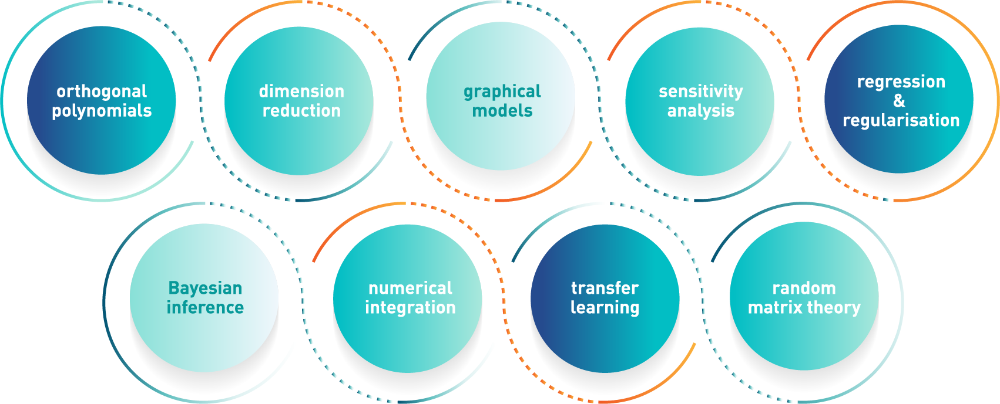

Build Polynomial Models.
equadratures is an open-source python code that builds models using orthonormal polynomials. These models can be constructed over subspaces, graphs, and even trees. The chart below provides an overview of some of the key methods baked into the code.

# To install the code, use the command below
pip install equadratures
# To install the code, use the command below
pip install equadratures